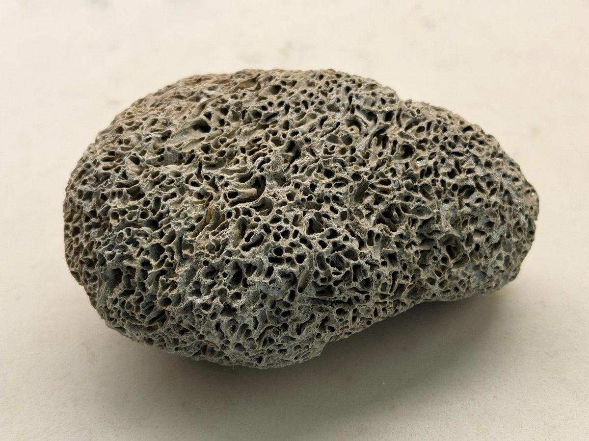
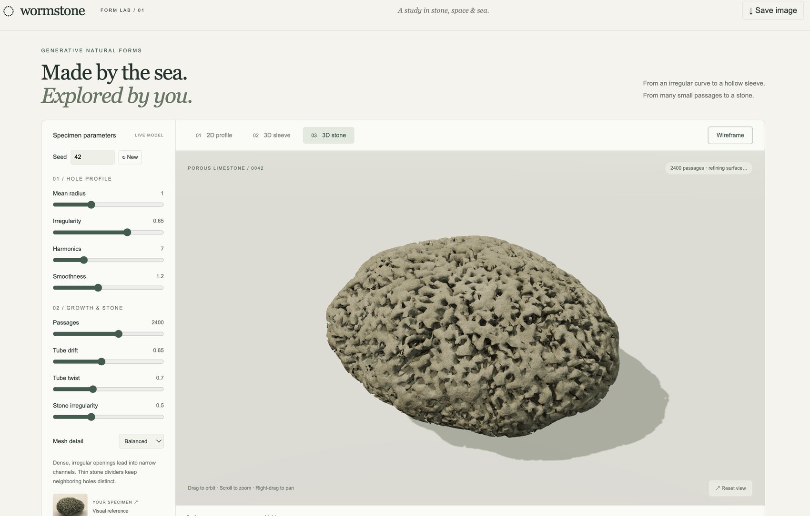
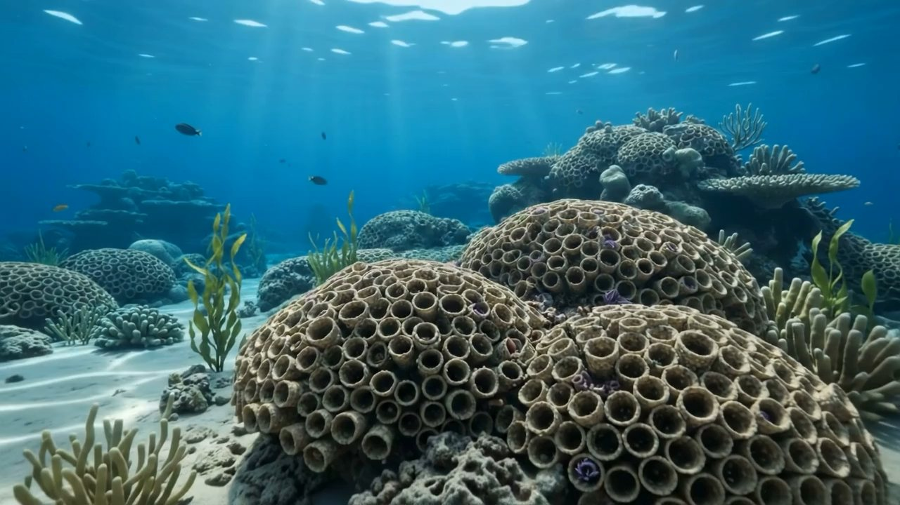
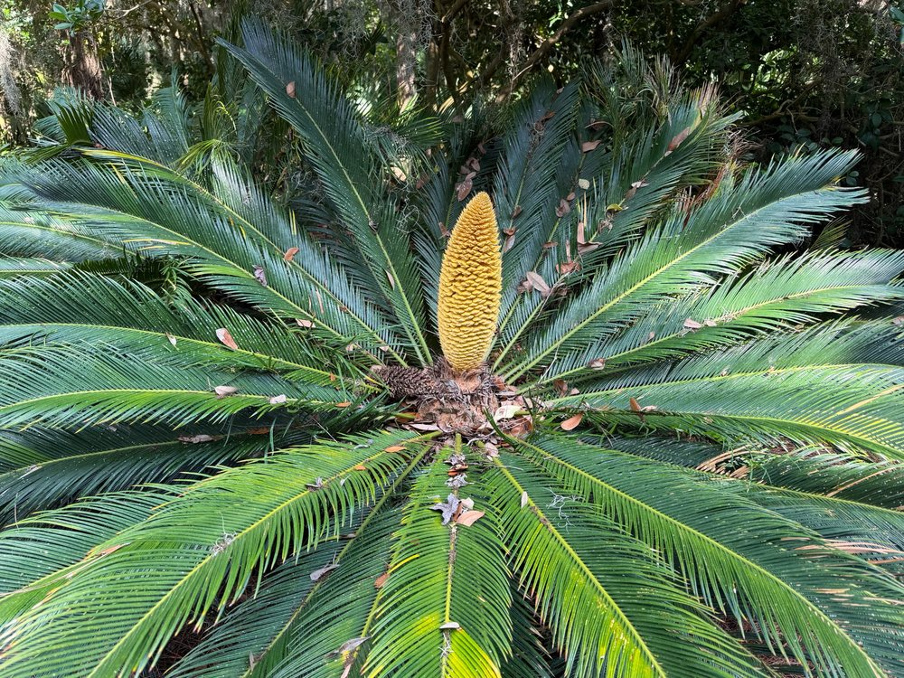

Rung 1 · Words
Raven ↔ writing-desk
A ↔ B through one idea: a quill.
What happens when one end of a connection is a way of knowing — not another thing?
Language ↔ a worm stone. Science ↔ a cycad. Humanities ↔ a museum.
A lens doesn't stop at the object. It keeps going — into chains of questions.
A ↔ B through one idea: a quill.
A whole set of relations carried across — until it breaks.
A whole system at another scale: what is kept, what is lost.
Thing ↔ thing, through an idea in the middle.
Subject → object → a chain of questions that keeps going.

One object, six subjects — each lens opens a different field around it.
A phrase associated with singing together, in large numbers.
Naming is an act of attention: each word selects a different feature.
Different languages can invite different questions — not just different labels.
Many voices under the sea
An Ainu choir you see
Bodies bending, shaping
Hair, thick and floating
We build from the water
Our houses in stone, mortar
We pass on and leave
On the beach, you will retrieve
The poem, sung. Two takes on the same words — the language lens turned into voice and rhythm.
Which one sounds more like the stone?
Music by Metaphorz, made with Google Flow Music.
From worm-built stone → imagined reef
Video created with generative AI (Google Gemini)
Worm extends its tentacles into the flow.
A computational lens asks: what is the process, and what are its states?

A geometric model lets us rotate, measure, compare, and transform the same object.
They do not secrete a continuous mineral shell.
Suspended sand grains and shell fragments.
Particles are positioned with specialized building organs.
A rapid-setting protein bio-adhesive locks the structure underwater.

Crevices, vertical relief, and surface roughness create microhabitats that can raise local biodiversity.
places to hide
places to grow
places to feed
more surfaces + edges
The object is no longer “just a stone.” It is habitat infrastructure.
In Ainu cosmology, animals can be understood as kamuy — spirit-deities visiting the human realm. Stories and chants can place the nonhuman being at the center of the account, changing the relation between observer and observed.
A humanities lens asks not only “What is it?” but “What relationships and stories gather around it?”
The same object can be material, habitat, artifact, metaphor, memory, or gift.
One object. Six lenses. Then research — and perhaps a model.
Open the cycad notes →
“The eye sees swords; chemistry sees molecular defenses.”
cycad → cycasin → MAM → DNA
cycad → famine food → “cycad hell” in the Ryukyus
cycad → Japan → Florida's nursery trade
One place. Six lenses. Then research — and perhaps a model.
Open the talk (PowerPoint) →Deep Looking: Unpacking Amelia Island with AI
Nana Dune · the Williams House, 1856 · learning history by solving AI puzzles · a 3D mesh · a poem in the manner of Emily Dickinson
What names has this place carried?
What is framed, displayed, or made visible?
What patterns appear in dates, maps, or collections?
How was the place built, preserved, or adapted?
What materials, climate, ecology, or decay shape it?
Whose stories are centered, missing, or contested?
A place is an object with layers of time, people, materials, and systems.
Start at 3:30
Stop around 30:00
The goal: notice what your attention normally edits out.
youtube.com/watch?v=H4fFD187b7ALOOK LONGER · TRY ANOTHER LENS · ASK ONE MORE QUESTION
A web app (free on GitHub) that turns one image into many connections.
Three lens styles: curated multi-lens · LAMESH lenses · single lens
Galleries so far: Proto Gallery (Fishwick) · Experimental Publishing (Malina & Chen)
Click the link, or scan the code with your phone.
As you explore, ask:
Which connection did this lens make? What did it make you notice that you hadn't seen before?